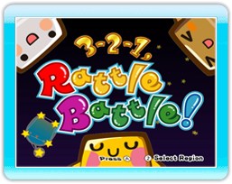
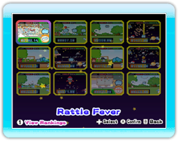
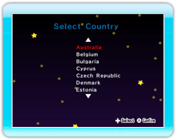

9 |
Aan de slag |
 |
Druk in het Titelscherm op om naar het Minigamesele-ctiescherm te gaan of op om naar het Regioselectiescherm te gaan.
In dit scherm kun je een van de actievolle minigames selecteren. Gebruik om een minigame te selecteren en druk op om je keuze te bevestigen.
In dit scherm kun je de regio waar je op dit moment woont selecteren.
Let op: Als je het spel voor de eerste keer opstart, selecteer dan eerst je regio voor je naar het Titelscherm gaat.
|
 |
 |
 |